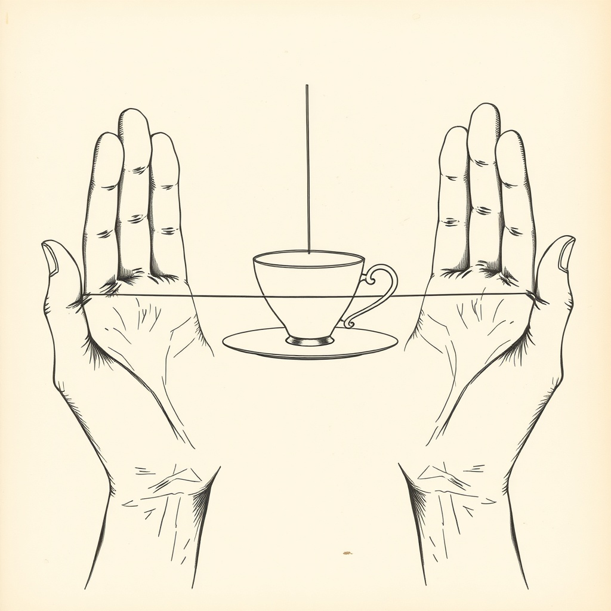
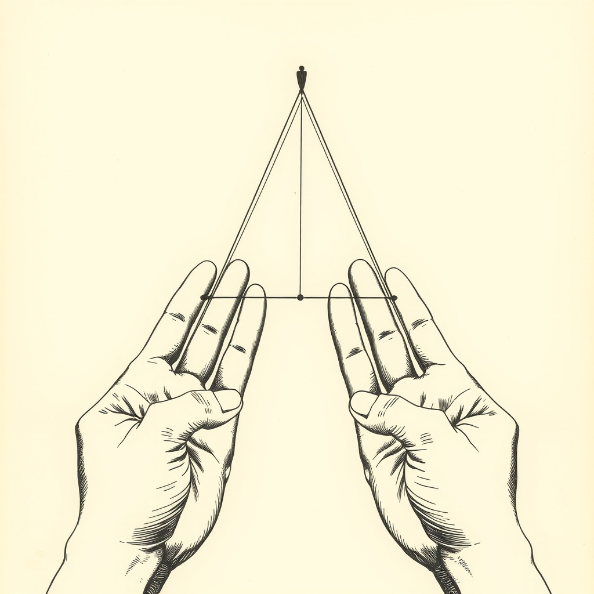
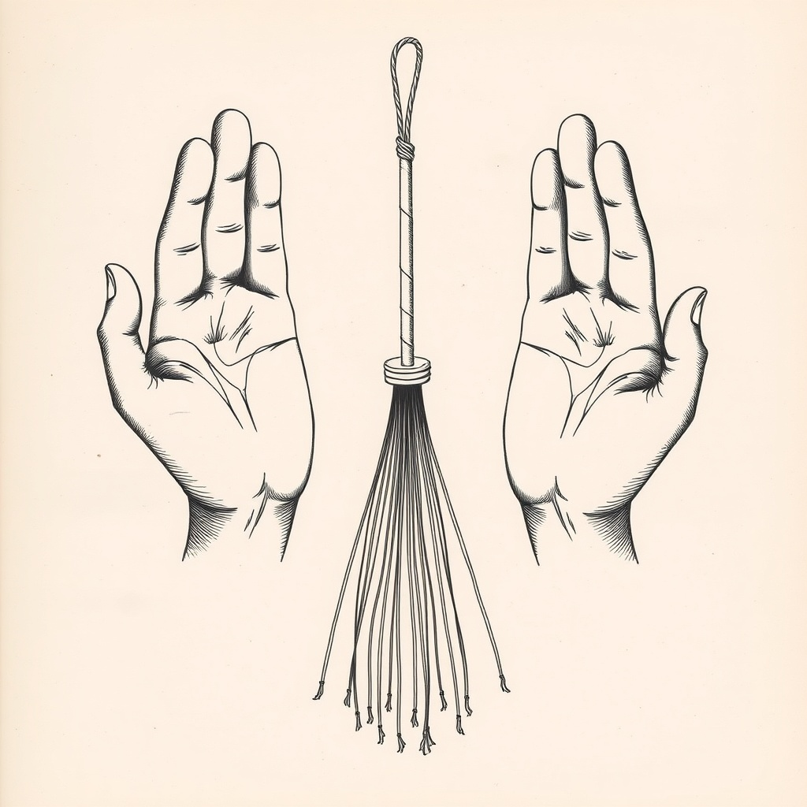
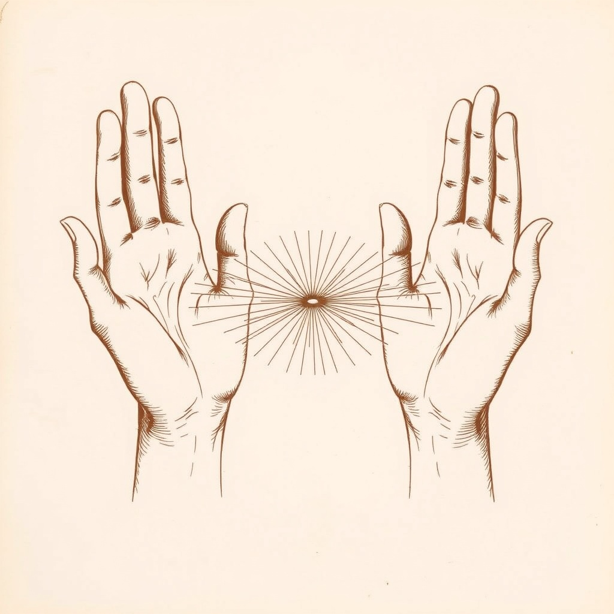
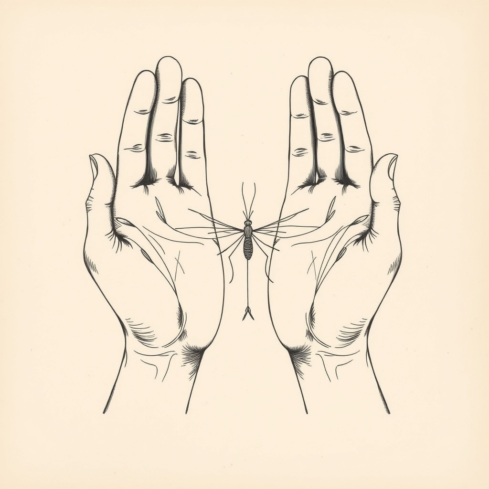
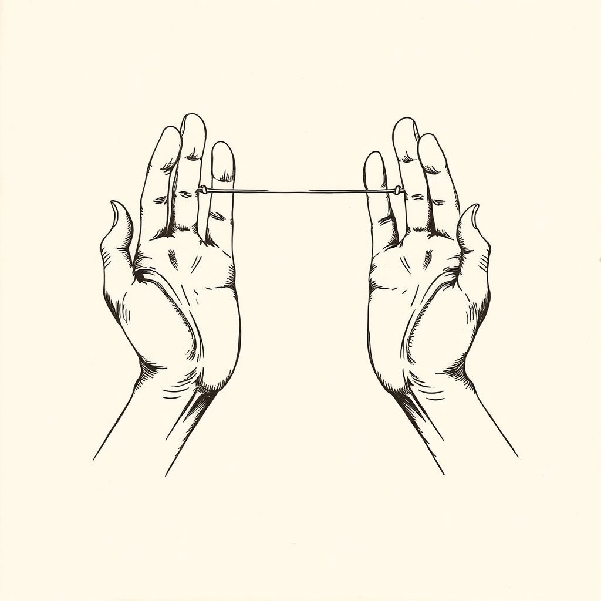
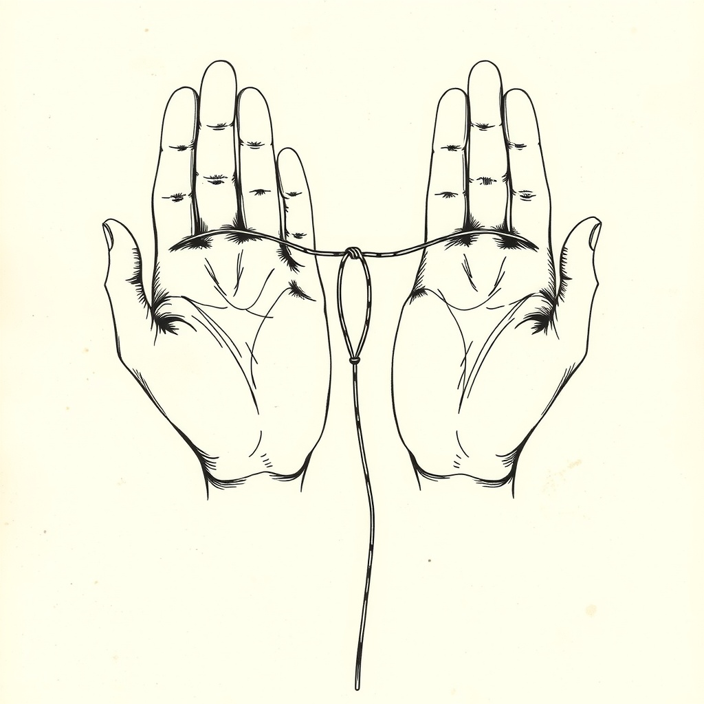

Cup and Saucer
A real teacup on a real saucer. The AI did not get the memo about it being made of string.
We tried to get an AI to draw plates for the seven figures that aren't in any pre-1930 public-domain book. These are what came back. They are pretty. They are also not how the figures actually look.
Kept here for posterity, because the AI was trying its best and some of them are charming. For the real lessons, head back to the main app.

A real teacup on a real saucer. The AI did not get the memo about it being made of string.

Closest to right. There is at least string forming a triangle.

A real broom, not a string-figure broom. Hands gesturing nearby for moral support.

Genuine starburst. Probably the prettiest of the bunch.

The AI drew a real mosquito between the palms. Anatomically accurate. Wrong subject.

Mercifully abstract. The safety filter hovered nearby.

Two hands, one loop, vague vibes. Approximately the right idea.